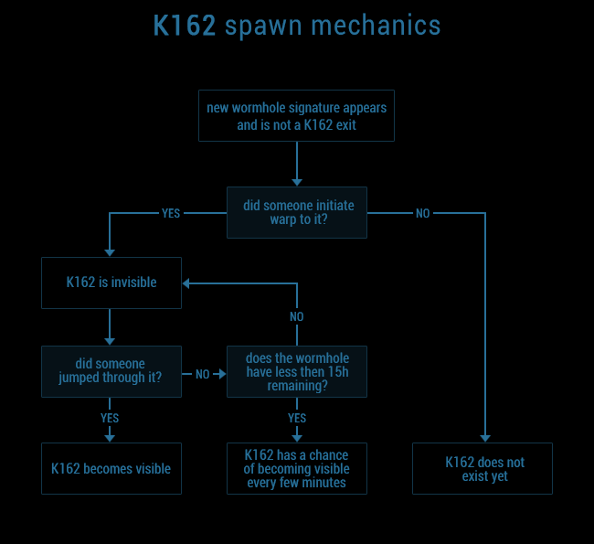

| whtype.info | ⚯ | SPAWN IN | LEADS TO | SHIP JUMP SIZE | TOTAL MASS | LIFETIME | SIG LEVEL | |||||||||||||||||||||||||
|
|
|
|
|
|
|
|
|
|
|
|
||||||||||||||||||||||
| info | ...... kills | ⋮ |
| ◄ | k162 spawn | wh terminology | site tooltips |

Hyperion expansion (Aug 2014) patch note:
> K162 apperance only on first jump (or after first warp and less than 15 hours remaining)
Additional info on this EVE-O forum post.
Use this tool to identify your wormhole connection by type.
This tool is the result of a continuous scanning project focusing on Anoikis space.
Check attributes of any wormhole type in EVE, or select different attributes as filters to track wanted wormhole types.
Initial data was pulled from Anoik.is, EVE Ref, UniWiki and several other sources.
All information is crosschecked, updated and verified by constant scanning and on grid observations.
Current public investigation:
It appears that wandering medium sized wormholes, thought to appear only in C1 systems, spawn in NullSec too.
If you find any of the following wormhole types in NullSec, feel free to send your report (screenshots included).
Feedback appreciated on this EVE-O forum thread where I post newly added updates.
In-game contact: Sothis Ast
Anoikis - lore name for wormhole space, also known as j-space or w-space.
Static - repeatedly respawning wormhole connection in a given j-space system.
EOL - end of life; wormhole connection with less than 4 hours of its lifetime left.
Destab - wormhole connection with less then 50% of its mass remaining (destabilized).
Crit - wormhole connection with less than 10% of its mass remaining (critical).
Frig hole - smallest wormhole connection with ship jump size restriction up to Frigates/Destroyers.
Shattered - wormhole systems in which all planets are shattered, and any structure is unable to be anchored.
Roll - putting enough mass through a wormhole to collapse it.
Rage roll - repeatedly rolling one's static connection in search for content.
Rolling battleship - a battleship of any race fit with a Higgs Anchor rig and battleship propulsion module for rolling wormhole connections.
Rolling HIC - Heavy Interdiction Cruiser fit with multiple Zero Point Mass Entanglers, a Higgs Anchor rig and a 100MN Afterburner for rolling medium and crit wormhole connections.
Cold pass - jumping thorugh a wormhole with propulsion module off, which doesn't increase ship mass.
Hot pass - jumping thorugh a wormhole with propulsion module on, which increase the ship mass.
Eviction - act of sieging, destroying and ultimately taking over an enemy wormhole system.
Hole control - Holding control of all incoming and outgoing wormhole connections during an eviction to stop enemies from getting in or out.
Doorstop - A ship sat on the outside of a crit wormhole connection with enough mass to roll it instantly, used to stop defenders or attackers from bringing in reinforcements.
K162 - other side of every wormhole type.
Bob - egregore, thoughtform, meme and a wormhole god. That is all.
All EVE Online related materials are property of CCP Games.
EVE Online, the EVE logo, EVE and all associated logos and designs are the intellectual property of CCP hf. All artwork, screenshots, characters, vehicles, storylines, world facts or other recognizable features of the intellectual property relating to these trademarks are likewise the intellectual property of CCP hf. EVE Online and the EVE logo are the registered trademarks of CCP hf. All rights are reserved worldwide. All other trademarks are the property of their respective owners. CCP is in no way responsible for the content on or functioning of this website, nor can it be liable for any damage arising from the use of this website.
This site use cookies for the mere visit count purpose.